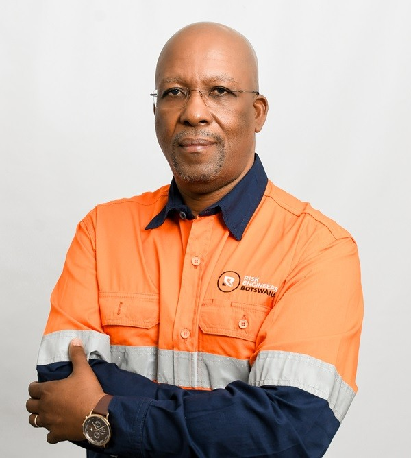
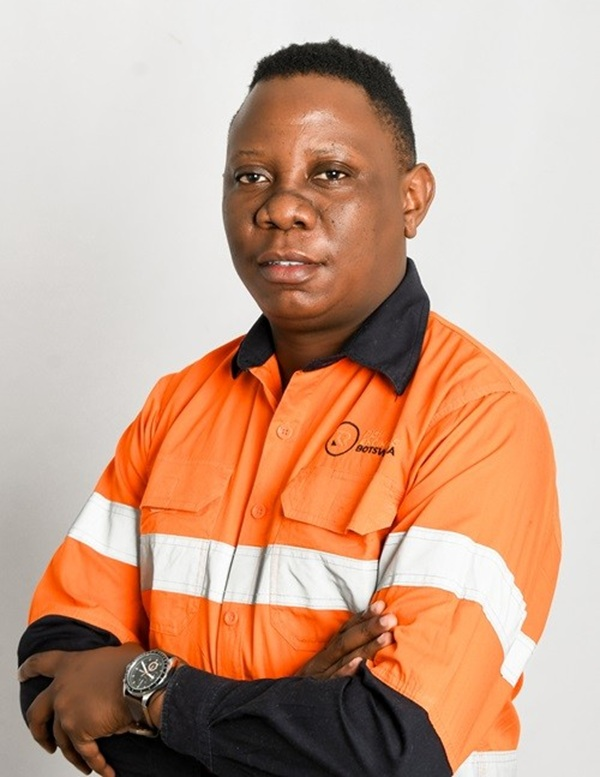
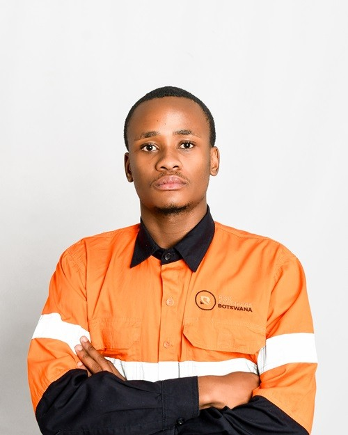
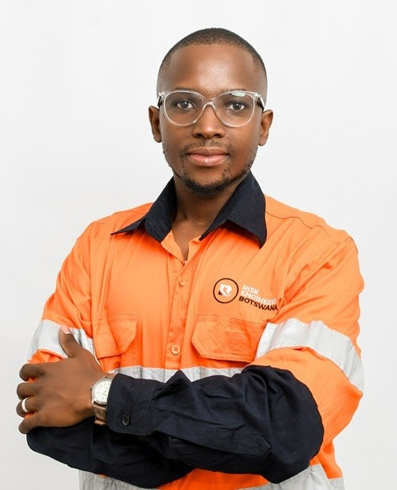
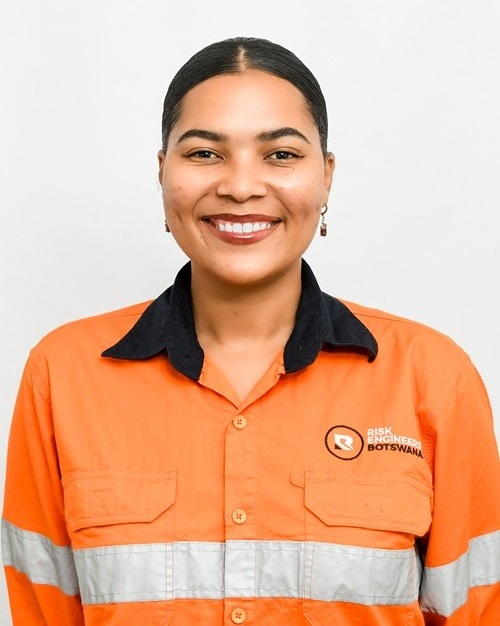

Paul G. Ramokgalo
Founder & Managing Director
Discover the faces behind REB's expertise.
The full current team is shown here. Tiles display name and position only; select any profile to view qualifications and the expanded biography.

Founder & Managing Director

Chief Operations Officer

Electrical Engineer / Risk Consultant

Mining Engineer / Risk Consultant

Chemical Engineer / Risk Consultant
Paul G. Ramokgalo (PGR) is a seasoned risk management professional with over 30 years of experience across risk management, risk financing, insurance, and claims management. Throughout his career, he has worked across the full risk management value chain, developing and implementing strategies focused on risk identification, assessment, mitigation, and financial protection. During his 14 years at Debswana, PGR established the organisation's risk management function, implementing proactive risk mitigation strategies and fostering a culture of risk awareness across its operations. He subsequently played a key role in establishing Sesiro, Debswana's in-house insurance company and Botswana's first captive insurer, supporting the optimisation of the organisation's risk financing strategy. PGR continues to contribute to the risk management profession through consultancy, risk advisory services, and participation in board and governance structures.
Thatayaone Sesinyi (TS) is a multidisciplinary risk professional with expertise spanning chemical and process engineering, enterprise risk management, environmental, social and governance (ESG), and business strategy. His engineering background provides a strong technical foundation for understanding operational and process-related risks, while his MBA strengthens his capabilities in business strategy, financial management and organisational decision-making. TS is COSO Enterprise Risk Management certified and supports organisations in understanding the relationship between operational, strategic, ESG and emerging risks. As Chief Operations Officer, he contributes to REB's risk, ESG, business continuity and advisory services while supporting the organisation's operational and strategic objectives.
Tshepo Monare (TM) joined Risk Engineers Botswana in September 2024 as a Junior Risk Analyst. He holds a Bachelor of Engineering in Electrical & Electronics Engineering from Botswana International University of Science and Technology (BIUST). TM gained practical industry experience during a six-month industrial placement at Karowe Diamond Mine, where he developed exposure to electrical systems, safety considerations and operational efficiency within a mining environment. At REB, he continues to develop his risk management expertise by applying technical engineering knowledge to risk assessment and advisory assignments, working alongside cross-functional teams on detailed assessments and practical risk management strategies.
Sillas Molosiwa (SM) holds a BSc in Mining Engineering and a BSc in Economics from Missouri University of Science and Technology, USA, and completed his MBA through Botho University in November 2024. He gained practical mining experience during his internship at Morupule Coal Mine and subsequently accumulated over five years of professional experience across project management and financial analysis. His experience as a Project Officer at Christa Capital and Fund Portfolio Analyst at the United Nations strengthened his project-management, financial-analysis, portfolio-performance and ESG capabilities. At REB, he contributes a multidisciplinary perspective to technical, financial, operational and ESG-related risk assessment.
Chantal Moemedi (CM) joined Risk Engineers Botswana as a Risk Consultant, bringing a background in chemical engineering and practical experience within the mining sector. She holds a Bachelor of Engineering in Chemical Engineering from BIUST and gained practical industry experience through a six-month industrial placement at Debswana Diamond Company, Jwaneng Mine. During her placement, CM gained exposure to maintenance operations, process control and operational efficiency. Her academic projects included commissioning a high-pressure reactor, extracting and purifying nickel from BCL smelter slag using sulphuric acid, and designing a 20,000-ton-per-day copper ore processing plant. At REB, she supports risk assessments and the development of practical, tailored risk solutions.